|
Drug± grup± z najp³odniejszych budowniczych na dzisiejszych ziemiach Polski byli Krzy¿acy
czyli Zakon Szpitala Naj¶wiêtszej Marii Panny Domu Niemieckiego w Jerozolimie.
Wbrew mniemaniu nie by³ to zakon tu³aczy. W XIII w. otrzymali nadania w po³udniowych
i ¶rodkowych Niemczech, we W³oszech, w Austrii, w Alzacji i Lotaryngii i w Czechach,
tak ¿e musiano dokonaæ podzia³u na 12 okrêgów. Po sprowadzeniu czê¶ci zakonu
na Wêgry zostali
wypêdzeni z Siedmiogrodu i dziwnym trafem znale¼li siê w Polsce, oficjalnie na zaproszenie
Konrada Mazowieckiego, choæ kto wie czy nie le¿a³o to w planach Rzymu i Cesarstwa
Niemieckiego. Konrad "podarowa³" im ziemiê dobrzyñsk±, lecz za jego plecami zostali
obdarowani przez niemieckiego cesarza Fryderyka II zdobyczami w Prusach, co potwierdzi³
równie¿ papie¿ Grzegorz IX w³±czaj±c w to tak¿e (bezprawnie) nadania ksi±¿êce.
Jak widaæ Polska nie
mia³a tu nic do powiedzenia. Wydaje mi siê, ¿e by³o to dalsze rozwiniêcie krucjaty
po³abskiej zapocz±tkowanej w XII w. przez papie¿a Eugeniusza III, gdzie ptretekstem
by³o pogañstwo, a faktycznym celem zdobycie nowych terytoriów dla Rzymu i Niemiec
³±cznie z Polsk±. £atwo¶æ z jak± Krzy¿acy uzyskiwali poparcie Rzymu na to wskazuje i
wydajê siê, ¿e Krzy¿acy nie byli zach³anni - oni realizowali tylko wycinek szerszego planu.
Budowle krzy¿ackie ³±czone s± zwykle z wykorzystaniem ceg³y i dlatego na pocz±tek
przypomnê stanowisko historyków w rzeczonej sprawie. Z ceg³± mamy ju¿ do czynienia
w staro¿ytnej Mezopotamii, gdzie ponoæ wytwarzano j± z mu³u rzecznego i s³omy, susz±c
nastêpnie na s³oñcu. Jak taka ceg³a nie rozsypa³a siê pod ciê¿arem wysokich murów
Babilonu nie mogê zrozumieæ, bo ponoæ
ceg³a wypalana to wymys³ dopiero IV w. pne. Rzymianie ceg³ê zaczêli wytwarzaæ w
przydomowych warsztatach w II w. ne., co nie przeszkodzi³o im zbudowaæ kolosseum ju¿
wiek wcze¶niej. Du¿e ilo¶ci ceg³y, a wiêc produkcjê na skalê przemys³ow± zaczêto
dopiero w XIX w. i tu napotykamy pierwszy problem - sk±d w ¶redniowieczu
pozyskiwano ceg³ê na budowê takiej ilo¶ci zamków? Drugim problemem jest zaprawa murarska.
Otó¿ jak g³osi legenda, a za ni± powtarzaj± powa¿ni historycy - si³a ¶redniowiecznej
zaprawy by³a uzale¿niona od drobiu, a szczególnie od wydajno¶ci niosek, gdy¿ jak wiadomo
Krzy¿acy do zaprawy dodawali ogromne ilo¶ci kurzego bia³ka. Nie byli w tym odosobnieni -
most Karola w Pradze stoi do dzi¶ dziêki czeskim kurom, a im dalej na zachód tym
zaprawy by³y
bardziej "specyficzne", gdy¿ tam oprócz bia³ka do zaprawy dodawano nawet ludzk± krew.
Nikt jeszcze nie wpad³ na prosty i zarazem genialny pomys³ by zbadaæ tak± zaprawê
w najzwyklejszym laboratorium chemicznym oraz og³osiæ jej sk³ad ¶wiatu, tym bardziej, ¿e bia³ko
jako zwi±zek organiczny powinno daæ siê datowaæ nawet niedoskona³± metod±
promieniotwórczego wêgla.
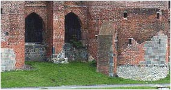 |
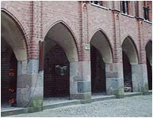 |
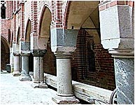 |
|
Wbrew pozorom w malborskim zamku jest sporo elementów kamiennych i to w kluczowych
punktach budowy. |
Wszyscy wiedz± zapewne, ¿e Malbork jest najwiêkszym kompleksem zamkowym na ¶wiecie (tak,
bo co prawda francuskie Carcassonne jest wiêksze, ale jest kompleksem miejskim i do
tego zbudowanym z kamienia). Malbork
sta³ siê stolic± Krzy¿aków nie od razu. Pocz±tkowo Krzy¿acy budowali na ziemi dobrzyñskiej,
potem jaki¶ czas mieszkali w Zantyrze i dopiero w roku 1272 rozpoczêli
budowê zamku w Malborku i wedle historyków zamek wysoki postawili w ci±gu 7 lat(sic!).
Sprawa jest o tyle ciekawa, ¿e budowano w terenie otoczonym przez bardzo nieprzychylnie
nastawione Pomorze Gdañskie, Polskê, Prusów i miejscow± ludno¶æ. Czy ju¿ w
tym okresie nie
mo¿na by³o uniemo¿liwiæ budowy zamku? Na ten temat historia milczy przeb±kuj±c
tylko co¶ o sk³óconych s±siadach. Od czego zatem zaczêto? Od murów obronnych czy
od razu od zamku? Jakie przedsiêbiorstwo zaopatrywa³o budowê w setki tysiêcy cegie³?
Gdzie siê ono znajdowa³o? Dzi¶ na tym terenie prosperuje jedna cegielnia w Nadbrze¿u
za Elbl±giem (czyli ówcze¶nie w niepodbitych jeszcze Prusach), bo w okolicy Malborka
nie ma surowca na ceg³y. A mo¿e by³o zupe³nie inaczej? Tempo budowy i ilo¶æ surowca
sk³ania mnie do hipotezy, ¿e w Malborku ju¿ wtedy zamek istnia³, tyle ¿e w ruinie. W
¶redniowieczu istnia³o powiedzenie, ¿e "Mediolan jest z marmuru, Buda z kamienia,
a Malbork z b³ota". "B³oto" nasi historycy zamienili na "ceg³ê" (bo ceg³ê wyrabia
siê przecie¿ z b³otnistej mazi) i przeszli nad tym do porz±dku dziennego. Ja s±dzê,
¿e ruiny zamku pokrywa³a warstwa ziemi, a ca³a praca Krzy¿aków ograniczy³a siê
do ich odkopania, oczyszczenia, odzyskania budulca i samej odbudowy. St±d byæ mo¿e tak
krótki czas budowy samego zamku wysokiego. Wskazówk±, która przemawia za zasypaniem ziemi±
jest tak¿e to,
¿e podziemia zamkowe s± do dzi¶ zasypane po pocz±tki ³uków stropowych i nikomu
siê nie chce przekopaæ do podstaw zamkowych piwnic.
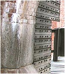 |
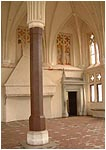 |
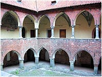 |
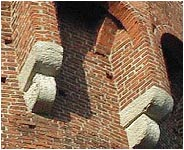 |
|
Malbork |
Lidzbark Warmiñski |
¦wiecie |
Bardzo ciekaw± korespondencjê na temat zamku nades³a³ pan £ukasz Papaj. On te¿ ma
szereg w±tpliwo¶ci:
|
Niestety obecny wygl±d zamku to raczej XIX i XX wieczna fantazja na
temat, natomiast w samym zamku mo¿na zauwa¿yæ kilka ciekawych elementów:
•
wiêkszo¶æ detali wykonana jest w kamieniu, a nie w cegle,
•
o czê¶ciach podziemnych wiemy niewiele (oficjalnie z powodu
wybuchowych niespodzianek),
•
g³ówny zamek zbudowano na wzgórzu wystaj±cym 15 metrów nad poziom
otaczaj±cych ¯u³aw, na miejscu starej pogañskiej budowli, jest to
jednocze¶nie jedyna czê¶c zamku, która siê nie zapada,
•
w ca³ej budowli zastosowano rozwi±zania nie spotykane w innych
budowlach tamtego okresu - g³ównie mówiê o hypokaustonie, czyli
"rzymskim" systememie ogrzewania sal gor±cym powietrzem,
•
w pa³acu Wielkiego Mistrza, szczególnie w zachodniej fasadzie
kamienne elementy przypominaj± "arabskie" sklepienia stalaktytowe,
•
odró¿niaj± siê partie, w których mocno zadbano o posadowienie budowli
w warunkach ¿u³awskich i te, w których tego nie zrobiono (mówi siê
ci±gle o "murszej±cych dêbowych balach wyjêtych z wody", ale zmieniaj±ce siê
warunki wodne to normalka na ¯u³awach, ka¿dy kto ma czas na obserwacjê
to wie, a wznosz±c tak± budowlê nie robi siê tego tak jak teraz, na 50 lat),
•
samo umiejscowienie budowli - tereny s± ogólnie ma³o zdrowe dla cz³owieka; woda
i bagniska; jaki ma sens ma budowa wielkiego zamczyska, którego za³oga w
ci±gu roku wykoñczy siê na skutek chorób, nie mówi±c o gnij±cych
zapasach. Tymczasem znowu anomalia - w 1410 choroby i brak ¿ywno¶ci
zmuszaj± Jagie³³ê do odwrotu, podczas gdy po¶piesznie zebrana za³oga
zamku mia³a siê ¶wietnie,
•
podczas wojny 13-letniej Malbork jest traktowany jako drugorzêdna
graniczna twierdza. Co w ci±gu 45 lat zmieni³o siê w postrzeganiu roli
zamku?
Mo¿naby by³o zaryzykowaæ teoriê o próbie przeniesienia
skopiowanych (ukradzionych) elementów z jakiej¶ innej budowli oraz o
istnieniu nieznanych instalacji. Du¿o by da³a eksploracja podziemi, ale
có¿ - "Achtung, minen!". Prze³om XV i XVI wieku to zreszt± czas innych dziwnych zmian:
•
nag³e za³amanie umiejêtno¶ci budowlanych (naukowo mówi siê o przej¶cu
od gotyku do renesansu, ale porównajmy skalê za³o¿eñ gotyckich i
wczesorenesansowych; ciekaw± spraw± s± plany bazyliki ¶w.Piotra -
pierwotny plan przedstawia budowlê o filigranowych podporach - oficjalnie
podaje siê ¿e Donato Bramante "nie rozumia³ konstrukcji" dlatego
poprzednicy musieli "dokonac korekt"; moje pytanie: nie rozumia³, czy te¿
wykonawcy nie posiadali znanych mu umiejêtno¶ci),
•
sprawa higieny osobistej - wbrew mitowi "¶mierdz±cego ¶redniowiecza"
tak narody pochodzenia normañskiego jak i z normañskiego krêgu
kulturowego (do którego nale¿a³a wczesna Polska) oraz Arabowie
przyk³adali do k±pieli i zadbanego wygl±du du¿e znaczenie. Tymczasem w
okresie renesansu mamy doczynienia z epidemiami wszelkich chorób, i
ogólnym wzorcem brudnego Europejczyka (np. relacje indyjskie z
za¿enowaniem opisuj±ce wygl±d angielskich marynarzy),
•
choroby i leczenie ran: sagi normadzkie opisuj± bohaterów chwal±cych
siê odniesionymi ranami, tymczasem oficjalnie "medycyna" narodzi³a siê w
renesansie; Bitwy ¶redniowieczne odznaczaj± siê wysok± asymetri± strat:
np. bitwa pod Crecy poch³onê³a wszystkiego 100-300 ofiar brytyjskich (z
8-14 tysiêcy wystawionych) i id±ce w tysi±ce straty Francuzów (1542 samych
wysoko urodzonych plus nieznana ilo¶æ piechoty i kuszników - mówi siê o
po³owie z wystawionych 20-40 tysiêcy). Tak ma³a ilo¶c ofiar mo¿e
sugerowac profesonaln± opiekê medyczn± po stronie wygranych (i
bezlitosne traktowanie przegranych).
Pytanie wiêc - co sta³o siê z t± wiedz± w okresie d¿umy, skoro w
renesansie wszystko odkrywano na nowo, by w wieku XIX koñczyæ
niedokoñczone gotyckie budowle?
|
Czy mo¿na co¶ dodaæ? Nie, bo po co. Mo¿naby zapytac historyków o ich zdanie ale
te¿ po co. Historia Polski (jak i innych narodów) by³a (i jest) pisana pod dyktando
polityków, a tam gdzie do prawdy miesza siê polityka, prawda musi ust±piæ. Polityczn±
historiê wch³aniamy niemal z mlekiem matki i dlatego
nawet dzisiaj ka¿dy Polak na d¼wiêk s³owa Krzy¿acy natychmiast ogl±da siê za
ostrym narzêdziem. Wróæmy do zamków "zbudowanych" przez Krzy¿aków. Historycy
przypisuj± im zbudowanie oko³o 51 zamków w przeci±gu dwóch wieków, gdzie
w 31 zasadniczym materia³em budowlanym by³a ceg³a.
Czy te inwestycje pañstwa krzy¿ackiego maj± jakie¶ odbicie w konkretnych,
¶redniowiecznych dokumentach? O dziwo te¿ nie,
tak samo jak i u nas. Historycy chyba nie widz± ró¿nicy miêdzy s³owem "budowa"
a "odbudowa", "przebudowa" czy "dobudowa".
Dlatego te¿ i Polacy i Krzy¿acy pomimo ci±g³ych walk, ¶redniowiecznej biedy i
¶iermiê¿nej techniki
ca³y czas budowali, budowali i budowali. Z rozmachem, potê¿nie i wysoko.
Pan £ukasz wspomina o tzw. hypokaustonie, czyli "rzymskim" systememie ogrzewania
sal gor±cym powietrzem. Jestem sceptycznie nastawiony co do "rzymskiego" ¼ród³a tego
wynalazku, ale znalaz³em ciekawostkê w ksi±¿ce Karola Górskiego "Dzieje Malborka"
dotyczace tego zagadnienia. Otó¿ autor pisze:
|
Podziwiamy te¿ urz±dzenia wewnêtrzne, a wiêc centralne ogrzewanie gor±cym powietrzem,
które bieg³o kana³ami z pieców, gdzie utrzymywano w wysokiej temperaturze wielkie
kamienie - w ten sposób ogrzewano wielki refektarz zimowy i inne pomieszczenia. W
XIX w. wypróbowano to ogrzewanie. Jeden z pieców zosta³ "poprawiony" przez zduna
zgodnie z zasadami ówczesnej techniki i ten przesta³ dzia³aæ.
|
Krzy¿acy przybywaj± do Polski w roku 1225 i otrzymuj± w posiadanie ziemiê che³miñsk±, na
której buduj± swoje zamki w Toruniu i w Grudzi±dzu (zamki w Radzyniu, Brodnicy i
Golubiu-Dobrzyniu buduj± dopiero w wieku XIV).
Zgodnie z prawem zakonu w wielkich zamkach mia³o bywaæ z regu³y 50-60 rycerzy, kilku
ksiê¿y oraz czelad¼ wraz ze s³u¿b±. W XIII w. liczbê wszystkich rycerzy zakonnych
okre¶la siê na oko³o 340, którymi musiano obsadziæ 11 zamków ³±cznie z Malborkiem,
co daje ¶redni± oko³o
30 rycerzy na zamek. Jak to siê sta³o, ¿e nie bêd±c jeszcze pewnym swych zdobyczy,
Krzy¿acy w Malborku od razu zbudowali zamek (mowa tylko o zamku wysokim) mog±cy
pomie¶ciæ liczbê kilkadziesi±t razy wiêksz±? Jako¶ ten rozmach k³óci siê z mo¿liwo¶ciami
braci zakonnych, bo XIII wiek to nie tylko budowa zamku malborskiego ale tak¿e
zamków w Bierzg³owie, Elbl±gu, Gniewie, Grudzi±dzu, Kowalewie Pomorskim, Papowie Biskupim,
Pokrzywnie, Rogó¼nie Pomorskim oraz w Starogrodzie i Toruniu. Sk±d zatem fundusze,
surowiec, specjali¶ci? Z zachodu? Historia wspomina tylko o ci±g³ym nap³ywie rycerzy,
których g³ównym zadaniem by³a walka. A mo¿e z Polski, bowiem niektóre za³o¿enia
architektoniczne mo¿na spotkaæ nawet w Krakowie? Niemo¿liwe jest tak¿e ustalenie,
czy zamki zbudowano jednocze¶nie czy te¿ kolejno i w jakim czasie. Karol Górski pisze,
¿e w roku 1233 Krzy¿acy zak³adaj± Che³mno i Toruñ (a zatem stawiaj± tam i swoje zamki),
w 1237 buduj± w Elbl±gu, w 1239 w Ba³dze, w 1255 buduj± Królewiec a w 1265 Pokarmin czyli
Brandenburg. Tempo jakiego nie spotyka siê nawet wspó³cze¶nie. W 32 lata sze¶æ zamków i
ani s³owa o producencie cegie³.
Ponoæ ju¿ w roku 1235 Krzy¿acy zajmowali Zantyr w wid³ach Wis³y i Nogatu. Na istnienie tej
mie¶ciny wskazuje tylko zapis, bo ¶ladu samego grodu nigdy nie znaleziono, bo
nawet nie usi³owano znale¼æ (polityczne oblicze historii). W nim to
ponoæ rezydowa³ biskup Chrystian z zakonem Dobrzyñców (te¿ rycerze zachodni). Gród
by³ drewniany ale o dziwo, ko¶ció³ by³ murowany lub kamienny. Wis³± do Gdañska p³ynê³o
zbo¿e i drewno (tutaj te¿ ani s³owa o ceg³ach) stanowi±ce podstawê ówczesnego handlu.
Z Zantyra mo¿na by³o w
sposób efektywny kontrolowaæ handel zarówno na Wi¶le i na Nogacie, co
w koñcowym efekcie mog³o doprowadziæ do upadku Gdañska. Dlaczego wiêc Krzy¿acy
porzucaj± Zantyr i buduj± nowy zamek w Malborku trac±c bezpowrotnie kontrolê nad
wi¶lanym handlem? Dlaczego maj±c w swoim rêku Zantyr przez 37 lat nie zbudowali
tu nawet skrawka muru obronnego?
Strategiczne miejsce Malborka w ówczesnej sytuacji politycznej jest ¿adne i tak
naprawdê nie wiadomo dlaczego "zamieni³ stryjek siekierkê na kijek". S±dzê, ¿e Krzy¿acy
szukali czego¶ bardziej warownego (najlepiej gotowego) i znale¼li zasypane ruiny
w Malborku, który
zaczêli odkopywaæ od roku 1272 a skoñczyli w 1280 (Malbork powsta³ z b³ota).
To nie Krzy¿acy zbudowali zamek, to malborski zamek "zbudowa³" Krzy¿aków.
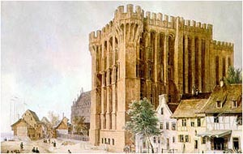 |
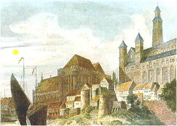 |
Dzisiejszy kszta³t zamku zawdziêczamy ostatnim dwustu latom i pracom dwóch nacji -
Prusaków i Polaków, a w zasadzie tylko Polakom podnosz±cym go z ruin po 1945 r.
Malarz Domenico Quaglio, ¿yj±cy w latach 1787-1837, zdo³a³
uwieczniæ fragnemty zamku na dwóch swoich obrazach, które zapewne malowa³ na
pocz±tku XIX w. Je¶li malowa³ z natury, to mam ogromne w±tpliwo¶ci co do niemieckiego
"ordnung muss sein". Co oznaczaj± miejskie zabudowania z "pruskiego muru" w pobli¿u
zamku? Czy
mieszkali tam robotnicy pracuj±cy w manufakturze dzia³aj±cej od roku 1718? Inne rzeczy
s± bardziej godne uwagi. Na pierwszym obrazie pa³ac wielkiego mistrza nie posiada jeszcze ani
spadzistego dachu ani dachów na wie¿yczkach (ko³paki na wie¿ach zamkowych "dorobiono"
dopiero w XIX w.) i nale¿y s±dziæ, ¿e tak wygl±da³ pierwotnie.
Tu¿ za nim widoczny budynek zamku ¶redniego i ani ¶ladu (nawet murów) zamku niskiego,
choæ wiadomo, ¿e nie by³ doszczêtnie zburzony do poziomu fundamentów. Sam pa³ac wielkiego
mistrza przypomina wolno stoj±ce zamki zachodniej Europy i diametralnie odbiega stylem
od zabudowañ zamku ¶redniegoi wysokiego.
Drugi obraz to ju¿ zagadki. Proszê zwróciæ uwagê na dwie wie¿e, które dzi¶ uwa¿a siê za
wie¿e mostowe. Nie le¿± w jednej linii (co jest faktem), a pomiêdzy nimi znajduj± siê
schody. Wie¿e s± jakby wê¿sze, niejednakowej wysoko¶ci
i w niczym nie przypominaj± dzisiejszych. Kolor ich sk³ania do wniosku, ¿e pocz±tkowo
by³y zbudowane z kamienia (dzi¶ resztki kamienia znajduj± siê we wspó³czesnych, ceglanych).
Zwróæmy te¿ uwagê na budowê dachu na zamku
wysokim. Sk³ada siê z dwóch czê¶ci, gdy dzi¶ widac tylko jedn± p³aszczyznê dachow±. Wie¿a
zamkowa jest du¿o wy¿sza (o trzy kondygnacje) lub jest to swobodna interpretacja artysty.
Zwróæmy tak¿e na brak murów obronnych na pó³noæ od wie¿ mostowych. Kto je rozebra³?
Szwedzi czy Prusacy? W ¶redniowieczu panowa³ zwyczaj, ¿e ka¿de zdobyte miasto w
dokumencie kapitulacyjnym by³o obowi±zane w pierwszej kolejno¶ci do rozebrania murów
obronnych. Polacy nigdy
nie zdobyli zamku (wykupili go od zaciê¿nych w roku 1457), a nie s±dzê by Szwedzi
marnowali amunicjê na ich wyburzenie strzelaj±c z Ka³dowa. Atakowali zreszt± z drugiej
strony, od strony Inflant. Mo¿e Krzy¿acy w tym miejscu ich wcale nie wybudowali? Ostatnia
zagadka mog±ca postawiæ w w±tpliwo¶æ rzeczywisto¶æ obrazu, to okr±g³a, ¿ó³ta plama
maj±ca chyba wyobra¿aæ s³oñce (widaæ cienie na budowli, choæ chyba nie od tego s³oñca).
Kto by³ w Malborku wie, ¿e takie po³o¿enie s³oñca jest niemo¿liwe, bo musia³oby
zachodziæ na... pó³nocy.
Ciekawi mnie te¿ w jakim odstêpie czasu powsta³y te dwa obrazy, choæby z uwagi na
dach pa³acu wielkiego mistrza i zasadnicze ró¿nice w zabudowaniach pomiêdzy wie¿ami
mostowymi a pa³acem. Inna sprawa to sam styl budowy pa³acu wielkiego mistrza. O ile
zamek wysoki zaliczyæ nale¿y do gotyku, to w rzeczonym pa³acu wcale go nie widaæ,
a przynajmniej z wierzchu. Sk±d ta zmiana stylu? Zamek ukoñczono oko³o 1280 roku,
pa³ac wiek pó¼niej, ale i tak do renesansu by³o jeszcze daleko. Przebudowa? Chyba nie.
Przebudowy dotyczy³y przewa¿nie wej¶æ, dzielenia pomieszczeñ i dodawaniu narodowych
akcentów, a nie jak siê mniema ca³o¶ci. Krzy¿akom, tak zami³owanym w gotyku, nic nie
przeszkadza³o budowaæ i w stylu romañskim, jak choæby dwie bramy w Bierzg³owie i
Ma³ej Nieszawce oparte o kamienne "rzymskie" ³uki.
W pa³acu wielkiego mistrza, w ¶cianê refektarza wmurowana jest armatnia kula, stanowi±ca
jakoby pami±tkê oblê¿emia zamku przez Jagie³³ê w 1410 r. Sama kula nie stanowi ¿adnej
osobliwo¶ci, ale ju¿ t³umaczenie jej wystrzelenia to istne curiosum nowo¿ytnej my¶li
historycznej. Wed³ug nich kula (poniewa¿ mia³a wiêkszy kaliber ni¿ stosowane wówczas
puszki) zosta³a wystrzelona z do³ka wykopanego w Ka³dowie po
drugiej stronie Nogatu. Kopano w ziemi dó³ pod odpowiednim k±tem i kierunkiem,
nastêpnie od ¶rodka wyk³adano
go glin± i po wyschniêciu (glina musia³a schn±æ kilka dni) "³adowano" prochem,
na wierzch k³adziono kulê, podpalano
proch i oddawano strza³. Rêce opadaj±... W przeb³ysku "geniuszu" (byæ mo¿e nie¶wiadomie)
autor hipotezy zrobi³ z atakuj±cych kompletnych durni. Tak± hipotezê mo¿e wymy¶leæ tylko cz³owiek,
który odda³ byæ mo¿e parê strza³ów z papierowej torebki po cukierkach. Mo¿naby wykonaæ
tak± próbê jako dowód ale jako cz³owiek maj±cy w przesz³o¶ci do czynienia z
materia³ami miotaj±cymi i wybuchowymi stanowczo odradzam nieprofesjonalistom, rêcz±c
jednocze¶nie, ¿e strza³ z takiego "dzia³a" móg³by co najwy¿ej og³uszyæ ryby w Nogacie
a ju¿ na pewno samych strzelaj±cych.
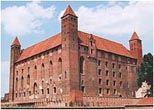 |
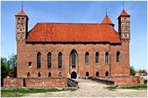 |
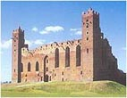 |
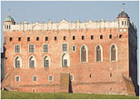 |
|
Bli¼niaczo podobne krzy¿ackie zamki - Gniew, Lidzbark Warmiñski, Radzyñ Che³miñski
i Golub-Dobrzyñ |
Jak to siê sta³o, ¿e "krzy¿acki" gotyk by³ tak rozpowszechniony na terenach, gdzie
Krzy¿acy wogóle nie dotarli? Czy nie czas zbadaæ metodami bardziej naukowymi pozosta³o¶ci
tego "stylu budowlanego"? Dzisiejsza metoda jest podobna do najprostszego ustalania
ojcostwa u dziecka
- je¶li jest podobne do ojca to w porz±dku, a je¶li nie - zaczyna siê podejrzliwie
przygl±daæ s±siadom. Czy nie mo¿na zmierzyæ wielko¶ci cegie³ (oczywi¶cie nie tych
"powtykanych" przez konserwatorów) i sprawdziæ ich wielko¶æ? Czy nie mo¿na pobraæ
próbek i ustaliæ ich sk³ad chemiczny? Jest to najprostszy sposób na stwierdzenie
istnienia jakiego¶ standardu lub nie, a tak¿e odpowiedzi na pytanie czy istnia³a wtedy
jedna "recepta" na wytwarzanie czy te¿ kilka o¶rodków stosuj±cych swoje metody
wytwarzania ceg³y. Co zatem siê mo¿e staæ, gdyby okaza³o siê, ¿e ceg³y z Pyrzyc,
Malborka, Warszawy czy Krakowa okaza³yby siê jednakowymi? Strach pomy¶leæ.
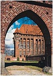 |
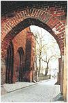 |
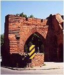 |
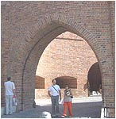 |
|
|
Gotycka koincydencja - w Malborku (XIII w.), Sztumie (XIV w.), Pyrzycach (XIII w.), Warszawie (XIV w.)
i Krakowie (XV w.) |
Inn±, niewyja¶nion± do koñca spraw± jest krzy¿acki most na Nogacie, umiejscawiany
pomiêdzy bram± mostow± a tzw. Vogelsang'iem czyli umocnionym przyczó³kiem na brzegu
w dzisiejszym Ka³dowie. Z przyczó³ka nie zosta³o nawet ¶ladu a to dlatego, ¿e ponoæ
by³ ziemno-drewniany (dlaczego nie murowany?). Dziwne. Dlaczego tak biegli w
sztuce budowlanej mnisi zlekcewa¿yli sobie tak ¿ywotny dla zamku element?
Dlaczego, buduj±c tak wspania³y zamek, po¿a³owali ceg³y na
jeden z najbardziej strategicznych elementów? Jest to ju¿ nie tylko zaniedbanie a wrêcz
bezmy¶lno¶æ. Dlaczego maj±c do dyspozycji tak± ilo¶æ budulca nie wybudowali mostu
ceglanego (podobnie jak ich pobratymcy w niemieckim Heidelbergu)?
Odpowied¼ mo¿e byæ tylko jedna - sami Krzy¿acy nie potrafili budowaæ i nie mieli pod
dostatkiem innego budulca jak tylko drewno i ziemiê.
To byæ mo¿e dlatego nie zrobili nic dla umocnienia swej pierwszej siedziby w Zantyrze.
Most by³ ponoæ drewniany i przy okazji ka¿dego zagro¿enia palony, czemu nie ma siê
co dziwiæ, bo ziemno-drewniany przyczó³ek w Ka³dowie wcale go nie chroni³ przed
regularnym wojskiem.
Jaki by³ to most? Prawdopodobnie nawet nie palowy, bo do dzi¶
nie odnaleziono pozosta³o¶ci pali wbitych w dno Nogatu, a jak wiemy ¿aden
drewniany most nie spali siê doszczêtnie. Jest mo¿liwe, ¿e by³ to
prymitywny most na ³odziach, taki jaki mo¿na zobaczyæ na rycinie z XIX wieku,
³atwiejszy w budowie
od mostu na palach, ³atwy w rozbiórce i ³atwy te¿ do zniszczenia za pomoc± branderów.
Dziwne jest te¿, ¿e za
dokumentowanych ju¿ czasów mosty przez Nogat budowano zupe³nie w innym miejscu,
kilkadziesi±t metrów
dalej w dó³ rzeki. Widaæ to na obrazku i mieszkañcy Malborka pamiêtaj± zapewne stary
drewniany most zbudowany przez radzieckich saperów jak i ten dzisiejszy zbudowane
dok³adnie w tym samym miejscu.
S±dzê, ¿e wbrew pozorom i pobo¿nym ¿yczeniom zwolenników ewolucji, sposób my¶lenia
cz³owieka nie zmieni³ siê i nie zmienia
mimo up³ywu lat. Dlatego g³ównym zadaniem ka¿dego okupanta jest zdobycie terenu,
utrzymanie go i mo¿liwie jak najszybsza i skuteczna eksploatacja. Który okupant
w znanej historii
budowa³ dla okupowanego narodu? Je¶li zdobycze terytorialne mia³y byæ trwa³e, to
w pierwszym rzêdzie
nale¿a³o wymieniæ ludno¶æ na "swoj±" metod± kolonizacji i dopiero mo¿na by³o my¶leæ
o budowaniu trwa³ych
obiektów. Co przyk³adowo, oprócz obozów koncentracyjnych, zbudowa³ w Polsce
niemiecki okupant? Nic, i tak
samo "budowa³" okupant z wielkiego Imperium Rzymskiego i tak samo budowa³ okupant spod
znaku "czarnego krzy¿a". Mentalno¶æ okupanta nie zmieni³a siê do dzi¶, zmieni³y siê
tylko narzêdzia walki i technika.
Czy Krzy¿acy mogli zbudowaæ to, co im siê przypisuje? Nie, i powtarza siê ta sama
sytuacja, co w wypadku Kazimierza Wielkiego - nie mieli dostatecznej bazy ekonomicznej,
nie mieli rozwiniêtej struktury gospodarczej (przecie¿ by³y to biedne, pogañskie Prusy)
i nie mieli odpowiedniej techniki. Ponadto dzia³ali w zbyt ma³ej liczbie i na obcym dla
siebie rozleg³ym terenie, gdzie ka¿de drogi transportu i ka¿da budowa musia³aby byæ
chroniona du¿o wiêksz± liczb± ludzi ni¿ zespo³y powo³ane do budowania.
• • •
Oko³o 890 roku Wulfstan, wys³any z misj± przez króla Anglii Alfreda Wielkiego,
wyruszy³ z Pó³wyspu Jutlandzkiego, by po siedmiu dniach nieprzerwanej ¿eglugi dop³yn±æ do
pruskiego portu Truso (o nazwie Elbl±g nie ma nawet wzmianki).
|
Wis³a ta jest wielk± rzek± i przez to dzieli Witland i kraj S³owian. A Witland
nale¿y do Estów. A ta¿ Wis³a wyp³ywa z ziemi S³owian i sp³ywa do Zalewu Estyjskiego,
a ten Zalew Estyjski jest co najmniej piêtna¶cie mil szeroki. [...]
Kraj Estów jest bardzo du¿y i jest tam du¿o miast, a w ka¿dym mie¶cie jest król.
|
Co w³a¶ciwie widzia³ Wulfstan? Podana szeroko¶æ Zalewu Estyjskiego pasuje do
odleg³o¶ci od Helu do uj¶cia Wis³y, wiêc mo¿e chodzi o zatokê Puck±? Wyglada te¿
na to, ¿e nie by³o wtedy Mierzei Wi¶lanej (mo¿e lu¼ne wyspy?), a Truso (Elbl±g?)
le¿a³o nad jeziorem, które
wype³nia³o dzisiejsz± depresjê. Odkopana dzi¶ drewniana osada rybacka nad jeziorem Dru¿no,
okrzykniêta na wyrost Truso, nijak siê ma do miana portu, do którego
zawin±³ Wulfstan. Opisuje on kraj Estów (czy dzisiejsza Estonia,
to resztki ¶wietno¶ci?) jako kraj du¿y i pe³en miast. Cz³owiek z zachodu, z Anglii (gdzie
nawet wsie budowano z kamienia), bêd±cy
w grupie elity spo³ecznej zapewne doskonale odró¿nia³ miasto od wsi, a królów od
plemiennych wodzów. Jak zatem wygl±da³y
miasta Estów, z których ka¿de by³o siedzib± króla? Jaki to dziki kraj podbijali
trzy wieki pó¼niej Krzy¿acy? Kto zatem jest budowniczym takiej ilo¶ci zamków w kraju
Witland, którego czê¶æ nazwano pó¼niej Prusami?
|
Estowie maj± taki zwyczaj: gdy umrze tam jaki¶ cz³owiek, niespalony le¿y on w swym
domu u rodziny i przyjació³ jeden miesi±c lub niekiedy dwa; królowie za¶ i inni
wysoko postawieni ludzie o tyle d³u¿ej, ile wiêcej maj± bogactw; niekiedy przez
pó³ roku nie s± oni spaleni i le¿± na wierzchu w swoich domach. [...]
A Estowie posiadaj± tak± umiejêtno¶æ, ¿e potrafi± wytwarzaæ zimno. I dlatego
nieboszczyk le¿y tam tak d³ugo i nie rozk³ada siê, poniewa¿ dzia³aj± na niego zimnem.
A je¿eli postawi siê dwa naczynia pe³ne piwa lub wody, potrafi± oba zamroziæ obojêtnie
czy jest lato, czy zima.
|
Angielska fantazja czy technika nie znana nam nawet dzisiaj? To nie by³o zjawisko
naturalne, bo jak Wulfstan napisa³ - "potrafi± wytwarzaæ zimno". Dziki, pogañski
kraj? Co zatem sta³o siê na tych terenach w okresie tylko trzech wieków? Kto lub co
jest przyczyn± tak szybkiej degradacji? A mo¿e tekst Wulfstana to nie IX wiek?
Przypuszczenie to ¿aden dowód. Przeczytajmy jeszcze fragment tekstu:
|
S³owiañszczyznê mia³ po prawej rêce, po lewej za¶ Langland, Laeland, Falster i Skonie.
Ca³a ta ziemia nale¿a³a do Danii. Nastêpnie mieli¶my po lewej stronie ziemiê Burgundów;
a ta posiada w³asnego króla. Dalej mieli¶my za ziemi± Burgundów takie ziemie, jak siê
one id±c z lewej kolejno nazywaj±: Blekinge, Meore, Oland i Gotland, ca³a ta ziemia
nale¿y do Sweów. A S³owiañszczyznê mieli¶my a¿ do uj¶cia Wis³y przez ca³y czas po
prawej stronie.
|
Którêdy zatem p³yn±³ maj±c po lewej stronie Oland i Gotland? Czy Skonie to dzisiejsza
szwedzka Skania, a Oland i Gotland to dzisiejsze wyspy Olandia i Gotlandia? Je¶li
p³yn±³ wzd³u¿ wybrze¿y po³udniowego Ba³tyku, to jakim cudem widzia³ Oland i Gotland?
Gdzie wtedy le¿a³ Bornholm? Jak siê nazywa³ - Blekinge, Meore?
|